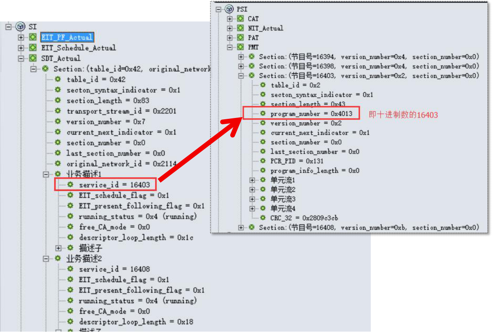
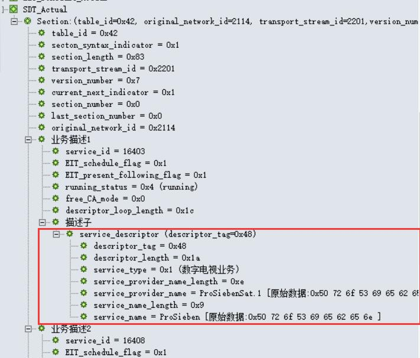
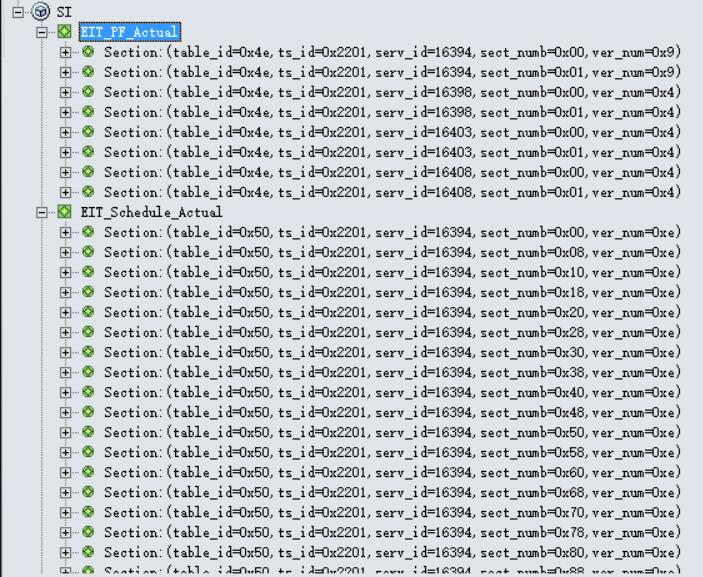
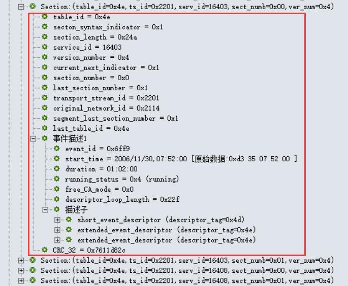
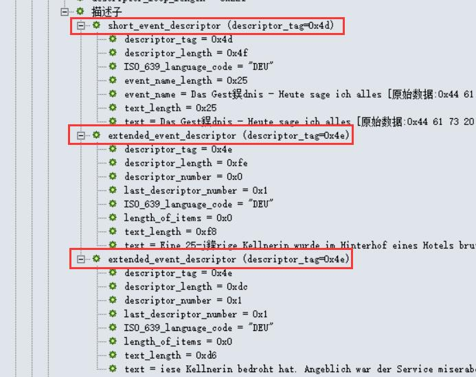
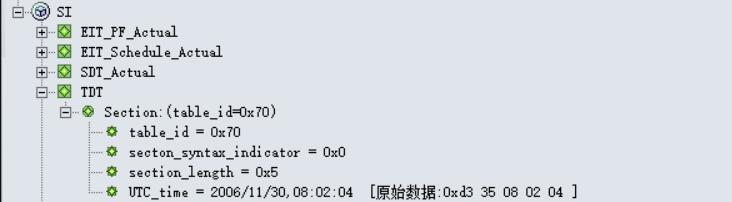
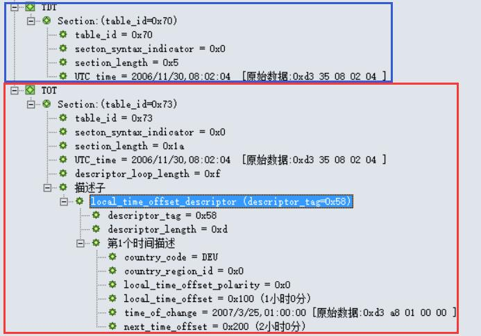
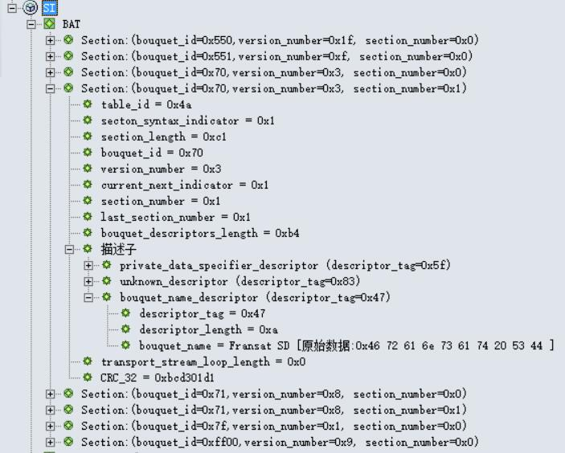
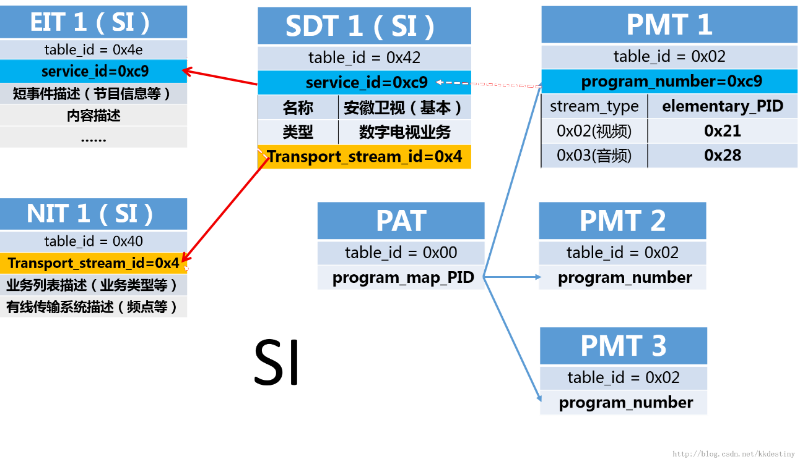

本节目录
PSI/SI教程

如果你是PSI/SI的初学者， 那么就让一切都从这里开始吧...
版权声明：未经许可，请勿转载！
©2016 · OneLib智库 · 挖掘自己的财富
第四章：深入学习SI
学习SI的基本知识
“SI是对多个TS流的描述，它拓展和完善了PSI提供的信息。”
PSI只提供了单个TS流的信息，使接收机能够对单个TS流中的不同节目进行解码； 但是，它不能提供多个TS流的相关业务，也不能提供节目的类型、节目名称、开始时间、节目简介等信息。 因此，DVB对PSI进行了扩展，提供了其他不同类型的表，形成了SI。
SI定义的表，并不需要全部传输， 其中，SDT、EIT和TDT是必须传输的； 而又以SDT和EIT最为重要，利用这2个表可以构成功能不同的EPG， 如提供节目附加信息、节目分类、节目预定和家长分级控制等。
SDT表
Service Description Table
"SDT描述了业务内容及信息，连接了NIT、EIT和PMT（PSI）"
SDT表被切分成业务描述段（service_description_section），由PID为0x0011的TS包传输（BAT段也由PID为0x0011的TS包传输，但table_id不同）。
描述现行TS（即包含SDT表的TS）的SDT表的任何段的table_id都为0x42，且具有相同的table_id_extension（transport_stream_id）以及相同的original_network_id。 指向非现行TS的SDT表的任何段的table_id都应取0x46。
SDT表的结构分析
SDT表主要提供关于Service的信息，如Service name，Service provider 等。
PID = 0x0011
table_id = 0x42 (discribe actual TS,现行TS)
table_id = 0x46 (discribe not actual TS,非现行TS)
下表是SDT结构：
| Syntax(句法结构) | No. of bits(所占位数) | Identifier(识别符) | Note(注释) |
| service_description_section(){ | |||
| table_id | 8 | uimsbf | 表标识符 |
| Section_syntax_indicator | 1 | bslbf | 段语法指示符，通常设置为“1” |
| Reserved_future_use | 1 | bslbf | 预留使用 |
| Reserved | 2 | bslbf | 保留 |
| Section_length | 12 | uimsbf | 注释 |
| transport_stream_id | 16 | uimsbf | 传输流标识符，给出TS的识别号 |
| Reserved | 2 | bslbf | 保留 |
| Version_number | 5 | bslbf | 注释 |
| Current_next_indicator | 1 | bslbf | 注释 |
| Section_number | 8 | uimsbf | 注释 |
| last_section_number | 8 | uimsbf | 注释 |
| original_nerwork_id | 16 | uimsbf | 注释 |
| reserved_future_use | 8 | bslbf | 预留使用 |
| for(i=0;i<N;i++){ | |||
| service_id | 16 | uimsbf | 注释 |
| reserved_future_use | 8 | bslbf | 预留使用 |
| EIT_schedule_flag | 1 | bslbf | 注释 |
| EIT_present_following_flag | 1 | bslbf | 注释 |
| running_status | 3 | uimsbf | 注释 |
| freed_CA_mode | 1 | bslbf | 注释 |
| descriptors_loop_length | 12 | uimsbf | 描述符循环长度 |
| for(i=0;i<N;i++){ | |||
| descriptor() | |||
| } | |||
| } | |||
| CRC_32 | 32 | rpchof | 注释 |
| } | |||
-
SDT 表中的Descriptor()：
- Bouquet name descriptor：查看！！
- CA identifier descriptor：查看！！
- Country availability descriptor：查看！！
- Data broadcast descriptor：查看！！
- Linkage descriptor：查看！！
- Mosaic descriptor：查看！！
- Multilingual service descriptor：查看！！
- NVOD reference descriptor：查看！！
- Service descriptor：查看！！
- Telephone descriptor：查看！！
- Time shifted service descriptor：查看！！
SDT表实例
在下图中，我们可以看到SDT表中的service_id=16403与PMT表中的program_number=0x4013(即16403)是对应的。 也就是说，通过解析SDT表获取到service_id=16403的节目信息后，可以存储到program_number=0x4013(即16403)的节目信息中。
SDT表与PMT表的映射关系在下图中，我们可以看到SDT表的基本信息。
SDT表和它的业务描述子Service descriptorEIT表
Event Infomation Table
"EIT按时间顺序提供每一个业务所包含的事件信息"
EIT即事件信息表（Event Information Table），它是EPG中绝大部分信息的携带者。 事实上，EPG主要就是通过SDT和EIT信息的获取和重组实现的。 SDT只提供了频道信息，而EIT则提供各频道下的所有节目的信息。 EIT的主要信息也是通过插入的描述符来实现的。 EIT按照时间顺序提供每一个业务所包含的事件的相关信息（如节目名称、节目简介）。
描述现行TS（即包含SDT表的TS）的SDT表的任何段的table_id都为0x42，且具有相同的table_id_extension（transport_stream_id）以及相同的original_network_id。 指向非现行TS的SDT表的任何段的table_id都应取0x46。
EIT表的结构分析
EIT表主要提供关于event的信息，如name, start time, duration等。共有四类EIT:
PID = 0x0012
table_id = 0x4E (actual Transport Stream, present/following event information，当前TS流，当前/后续事件信息)
table_id = 0x4F (other Transport Stream, present/following event information，其他TS流，当前/后续事件信息)
table_id = 0x50 ~ 0x5F (actual Transport Stream, event schedule information，当前TS流，事件时间表信息)
table_id = 0x60 ~ 0x6F (other Transport Stream, event schedule information，其他TS流，事件时间表信息)
下表是EIT结构：
| Syntax(句法结构) | No. of bits(所占位数) | Identifier(识别符) | Note(注释) |
| event_information_section(){ | |||
| table_id | 8 | uimsbf | 表标识符 |
| Section_syntax_indicator | 1 | bslbf | 段语法指示符，通常设置为“1” |
| Reserved_future_use | 1 | bslbf | 预留使用 |
| Reserved | 2 | bslbf | 保留 |
| Section_length | 12 | uimsbf | 注释 |
| service_id | 16 | uimsbf | 注释 |
| Reserved | 2 | bslbf | 保留 |
| Version_number | 5 | bslbf | 注释 |
| Current_next_indicator | 1 | bslbf | 注释 |
| Section_number | 8 | uimsbf | 注释 |
| last_section_number | 8 | uimsbf | 注释 |
| transport_stream_id | 16 | uimsbf | 注释 |
| original_nerwork_id | 16 | uimsbf | 注释 |
| segment_last_section_number | 8 | uimsbf | 注释 |
| last_table_id | 8 | uimsbf | 注释 |
| for(i=0;i<N;i++){ | |||
| event_id | 16 | uimsbf | 事件标识符 |
| start_time | 40 | bslbf | 注释 |
| duration | 24 | bslbf | 注释 |
| running_status | 3 | uimsbf | 注释 |
| freed_CA_mode | 1 | bslbf | 注释 |
| descriptors_loop_length | 12 | uimsbf | 描述符循环长度 |
| for(i=0;i<N;i++){ | |||
| descriptor() | |||
| } | |||
| } | |||
| CRC_32 | 32 | rpchof | 注释 |
| } | |||
-
EIT表中的Descriptor()：
- Component descriptor：查看！！
- Content descriptor：查看！！
- Data broadcast descriptor：查看！！
- Extended event descriptor：查看！！
- Linkage descriptor：查看！！
- Multilingual component descriptor：查看！！
- Parental rating descriptor：查看！！
- Short event descriptor：查看！！
- Telephone descriptor：查看！！
- Time shifted event descriptor：查看！！
EIT表实例
在下图中，两个部分的EIT信息都是针对当前的TS流(其table_id分别是0x4e和0x50，都是actual的EIT信息)。 其中，第一部分是针对当前TS流程中各业务的当前/后续事件信息(table_id=0x4e)； 第二部分是针对当前TS流中各业务的事件时间表信息。
EIT表中的当前TS流信息在下图中，红框内的信息即为一个EIT表的基本信息。这里的EIT表是当前TS流当前事件的EIT信息。
我们看的事件描述的描述子里，开始时间start_time为“2006/11/30 07:52:00”， 持续时间duration为“01:02:00”， 状态running_status为0x4(即running)， CA模式free_CA_mode为0x0(即free)。
EIT表的基本信息和一个事件的描述除了这些基本的事件信息，我们还可以继续往下一层的描述子查看更多信息。
如下图所示，这里有短事件描述子short_event_descriptor，它以文本方式提供了事件名称和该事件的简短描述；下图中，我们可以看到事件的编码为“DEU”(德语)，以及事件名称。
此外，还有拓展事件描述子extended_event_descriptor；它给出了一个事件的详细文本描述。如果一个事件的信息长度超过256字节，可以使用多于一个相关联的扩展事件描述符来描述。文本信息可以分为两个栏目，一栏为条目的描述，另一栏为条目的内容。
EIT表中一个事件的详细TDT表
Time & Date Table
"TDT仅传送UTC时间和日期信息，只有一个段"
TDT表的结构分析
TDT为时间和日期表（Time&Date Table），它仅传送UTC时间和日期信息。
PID = 0x0014
table_id = 0x70
TDT仅包含一个段，其结构如下：
| Syntax(句法结构) | No. of bits(所占位数) | Identifier(识别符) | Note(注释) |
| time_date_section(){ | |||
| table_id | 8 | uimsbf | 表标识符 |
| Section_syntax_indicator | 1 | bslbf | 段语法指示符，通常设置为“1” |
| Reserved_future_use | 1 | bslbf | 预留使用 |
| Reserved | 2 | bslbf | 保留 |
| Section_length | 12 | uimsbf | 注释 |
| UTC_time | 40 | bslbf | 注释 |
| } | |||
40位，包含了当前时间和日期(UTC)，头16位表示日期(16 LSBs of MJD)，后24位表示时间。
例如: 93/10/13 12:45:00表示为：“0xC079124500”
TDT表实例
下图可以看到，时间和日期是：2006/11/30 08:02:04
TDT表TOT表
Time Offset Table
"TOT是TDT的一个扩展，增加了一个描述符"
TOT表的结构分析
TOT表提供了UTC时间和日期信息，以及和本地时间的时差。
PID = 0x0014
table_id = 0x73
TOT表结构如下：
| Syntax(句法结构) | No. of bits(所占位数) | Identifier(识别符) | Note(注释) |
| time_date_section(){ | |||
| table_id | 8 | uimsbf | 表标识符 |
| Section_syntax_indicator | 1 | bslbf | 段语法指示符，通常设置为“1” |
| Reserved_future_use | 1 | bslbf | 预留使用 |
| Reserved | 2 | bslbf | 保留 |
| Section_length | 12 | uimsbf | 注释 |
| UTC_time | 40 | bslbf | 注释 |
| Reserved | 2 | bslbf | 保留 |
| descriptors_loop_length | 12 | uimsbf | 描述符循环长度 |
| for(i=0;i<N;i++){ | |||
| descriptor() | |||
| } | |||
| CRC_32 | 32 | rpchof | 注释 |
| } | |||
注意到，这里的UTC_time和TDT表的UTC_time是一致的，都是以UTC和MJD形式表示当前时间和日期；其格式也与TDT的UTC_time相同，这里不再赘述。
-
TOT表中的Descriptor()：
- Local time offset descriptor：查看！！
TOT表实例
下图可以看到，前面部分和TDT表是一致的，只是后面多了一个描述子。从local_time_offset字段可以看出，该地区的时区是东一区，即UTC+1。
TDT表
国家代码 country_code
24位字段，按照ISO 3166用3字符代码指明国家。
每个字符根据GB/T 15273.1-1994编码为8位，并依次插入24位字段。
假设3个字符代表了一个900至999的数字，那么country_code指定了一组ETSI定义的国家。
其分配见ETR 162。国家组的国家代码应该被限制在同一时区内。
例如：英国由3字符代码“GBR”表示，编码为：“01000111 0100 0010 0101 0010”。
国家区域标识符 country_region_id
6位字段，表示country_code指明的国家所在的时区。若国家内部里没有时差，则置“000000”。
| country_region_id | 描述 |
| 00 0000 | 未使用时区扩展 |
| 00 0001 | 时区1（最东部） |
| 00 0010 | 时区2 |
| 00 0011 | 时区3 |
| ... | ... |
| 11 1100 | 时区60 |
| 11 1101 – 11 1111 | 预留 |
本地时间偏移极性 local_time_offset_polarity
1位字段，用于指明随后的local_time_offset的极性。
置“0”时，极性为正，说明本地时间早于UTC时间（通常在格林威治以东）；置“1”时，极性为负，说明本地时间晚于UTC时间。
本地时间偏移 local_time_offset
16位字段，指出由country_code和country_region_id确定的区域的相对于UTC的时间偏移，范围为-12小时至+13小时。
16比特含有4个4位BCD码，顺序为小时的十位，小时的个位，分的十位，分的个位。
时间变化 time_of_change
40位字段，指明时间改变时当前的日期（MJD）与时间（UTC），见附录C。
该字段分为两部分，前16位给出了LSB格式的日期（MJD），后24位给出了UTC时间（6个4位BCD码）。
下一时间偏移 next_time_offset
16位字段，指出由country_code和country_region_id确定的区域，当UTC时间变化时的下一个时间偏移，范围为-12小时至+13小时。
此16比特域为4个4位BCD码，依次为时的十位，时的个位，分的十位，分的个位。
BAT表
Bouquet Association Table
"BAT将网络中的所有业务分成了多个业务群，以此界定用户"
BAT即业务群关联表（BouquetAssociation Table），它将网络中所有的业务分成了多个业务群，以此界定用户。 例如，将网络中所有业务分为两个业务群，一个是境内节目业务群，另一个是境外节目业务群。 这样，国内的运营商就可以利用这样划分的业务群，充分利用节目资源，在不违反现有广电总局规定的前提下，同时分别满足境内用户和境外用户。
BAT本身可以跨网络存在，但在国内运营体系来看几乎没有得到真正使用。 国内的运营使用中，BAT还可以存在分级运营的运营体系中，用于区分不同的地域用户。
BAT表的结构分析
BAT表主要提供关于Bouquet的信息，Bouquet是一个services的集合。
PID = 0x0011 (和SDT相同，通过table_id区分)
table_id = 0x4A
BAT表结构如下：
| Syntax(句法结构) | No. of bits(所占位数) | Identifier(识别符) | Note(注释) |
| network_information_section(){ | |||
| table_id | 8 | uimsbf | 表标识符 |
| Section_syntax_indicator | 1 | bslbf | 段语法指示符，通常设置为“1” |
| Reserved_future_use | 1 | bslbf | 预留使用 |
| Reserved | 2 | bslbf | 保留 |
| Section_length | 12 | uimsbf | 注释 |
| bouquet_id | 16 | uimsbf | 注释 |
| Reserved | 2 | bslbf | 保留 |
| Version_number | 5 | uimsbf | 注释 |
| Current_next_indicator | 1 | bslbf | 注释 |
| Section_number | 8 | uimsbf | 注释 |
| last_section_number | 8 | uimsbf | 注释 |
| Reserved_future_use | 4 | bslbf | 预留使用 |
| bouquet_descriptors_length | 12 | uimsbf | 业务群描述符长度 |
| for(i=0;i<N;i++){ | |||
| descriptor() | First descriptor loop | ||
| } | |||
| reserved_future_use | 4 | bslbf | 预留使用 |
| transport_stream_loop_length | 12 | uimsbf | 传输流循环长度 |
| for(i=0;i<N;i++){ | |||
| transport_stream_id | 16 | uimsbf | 注释 |
| original_network_id | 16 | uimsbf | 注释 |
| reserved_future_use | 4 | bslbf | 预留使用 |
| transport_descriptors_length | 12 | uimsbf | 传输流描述符长度 |
| for(i=0;i<N;i++){ | |||
| descriptor() | Second descriptor loop | ||
| } | |||
| } | |||
| CRC_32 | 32 | rpchof | 注释 |
| } | |||
对比NIT表的结构，BAT表和NIT表在结构上是一样的。BAT表也有两层的描述子。
BAT表各层的Descriptor()包括:
-
第一层(First descriptor loop)
- Bouquet name descriptor：查看！！
- CA identifier descriptor：查看！！
- Country availability descriptor：查看！！
- Linkage descriptor：查看！！
- Multiligual bouquet name descriptor：查看！！
-
第二层(Second descriptor loop)
- Service list descriptor：查看！！
BAT表实例
下图中，可以看到bouquet_name_descriptor的bouquet_name为“Fransat SD”。
BAT表本章小结
Summary
在本章最后，我们回到PAT表。
从PAT表开始，我们通过program_map_PID找到了对应的PMT表。
在PMT表中，我们通过program_number与SDT表中的service_id关联起来。
在EIT表中，我们通过service_id与SDT表中的service_id以及PMT表的program_number关联起来。
SDT/EIT表与PAT、PMT、NIT表的映射关系本章通过对SI各表结构的解析，逐步讲解了SDT表、EIT表、TDT/TOT表和BAT表的整体结构，并对各表里出现的描述子(Descriptor)进行了简单的说明。 由于本教程的目的只是讲解SI各表、让新手们能有一个形象的概念， 在本章里我没有简单粗暴地照搬PSI规范，而是以一条主线的形式从PAT表入手、逐步进入其他表，同时增加了很多实例分析，因此会忽略一些内容(如具体的描述子结构和功能说明)； 这只是一种学习的策略，希望新手们从整体结构入手，不要死盯着某一个细节不放。 如果要查看更详细的信息，可进入 资料快查 来查看你需要的信息。
参考文档
References
版本信息
Version Information
| # | 发布日期 | 版本 | 更新内容 | 作者 | 审核 |
| 1 | 2013年10月24日 | V1.0 | 文档《2.PSI/SI深入学习3——SI信息解析1(NIT,BAT) 》 | 林晓州 | —— |
| 2 | 2013年10月24日 | V1.0 | 文档《2.PSI/SI深入学习3——SI信息解析2(SDT, EIT, TDT,TOT) 》 | 林晓州 | —— |
| 3 | 2016年02月22日 | V2.0 | 整合了多个文档资料，对SI的知识进行系统的总结。 | 林晓州 | —— |